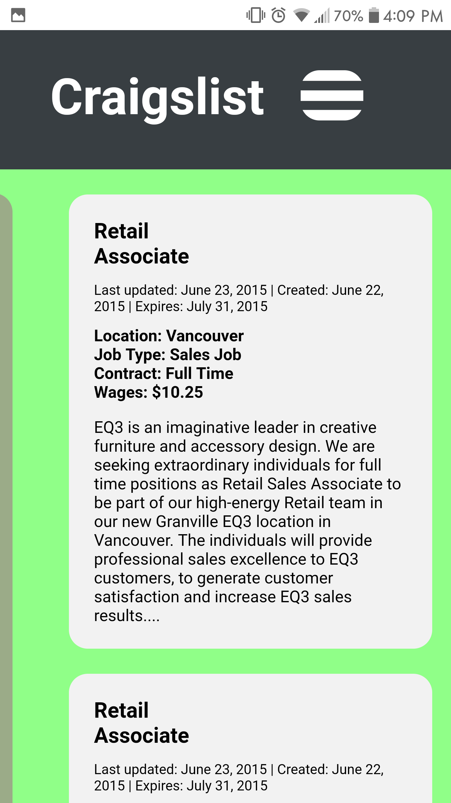
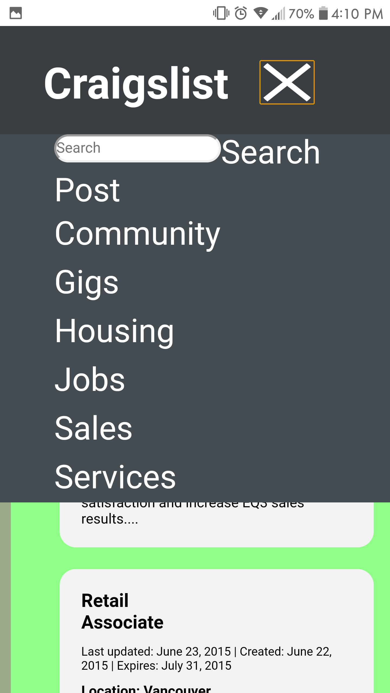

website redesign

summary
For the final project of a course I took in 2015 called Information Design I had to redesign one section of the Craigslist website. We worked in teams of two to recreate a section of Craigslist using HTML, CSS, and JavaScript. Part of the assignment required that we make the website adaptable so that it could be viewed on a computer monitor, tablet, or mobile device.
process
My partner and I had to redesign the jobs section of Craigslist from scratch, meaning we had to write all the code required for the website to function. We started with HTML to build the basics of the site, then used CSS for the cosmetic appearance of the website and finally we used JavaScript to implement the website's adaptability and animations.
 We started by making the website for a basic desktop web browser and then made to make it adaptable to make the content shift in a way that it would still look good and be functional on a mobile or tablet screen. One part of this was making a "hamburger menu" appear once the screen was smaller than a certain size.
challenges
We ran into the most problems when working with JavaScript and making things react properly when in desktop vs mobile mode. We had to do a lot of research, testing and re-coding parts of the script to finally make it work the way we intended.
reflection
This class was my first introduction to using JavaScript so I learned a lot about what it is used for and how it can improve the experience of a website. Overall, the project turned out well and my partner and I were pretty happy with the results.
final product
Here is the final website.